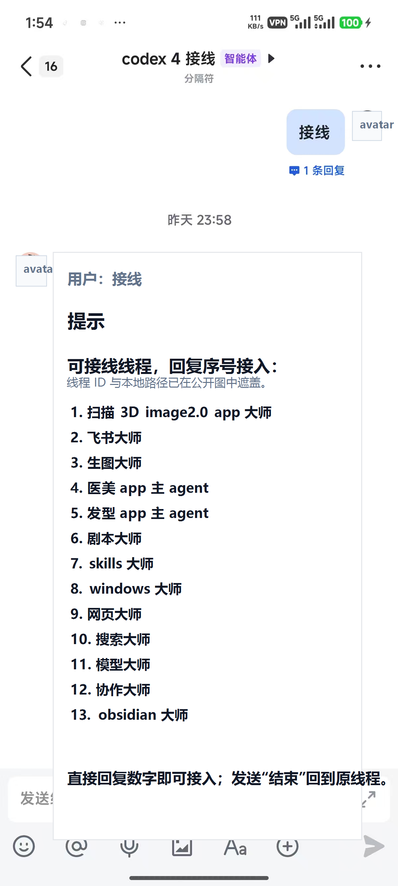
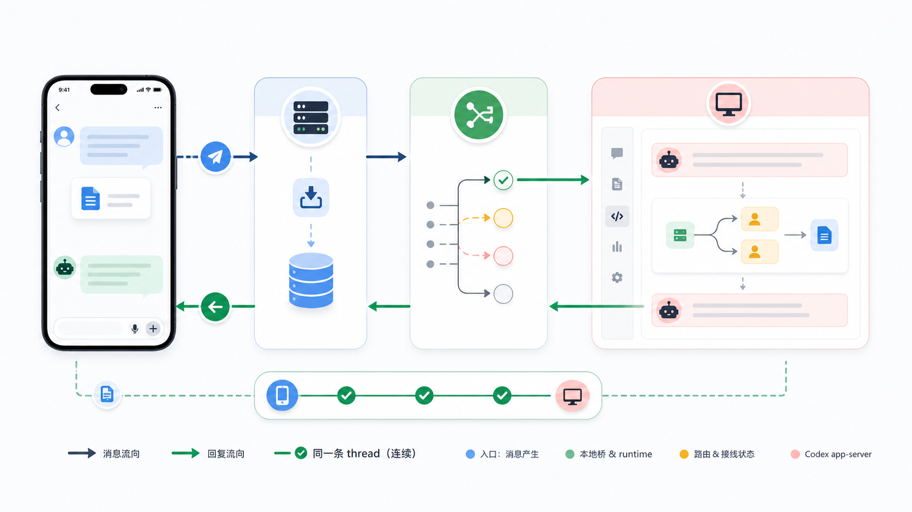
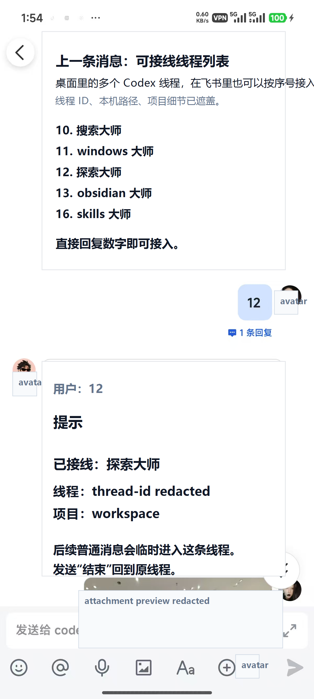
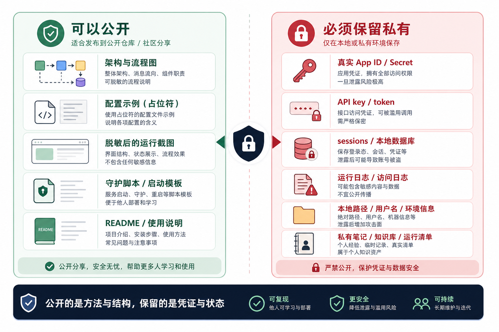

我读完这个开源项目后，越来越觉得，AI 工具真正麻烦的地方，不是它不会做事，而是线程一多，人先乱。
一个线程在改代码，一个线程在查资料，一个线程在整理文档，还有一个线程专门管系统状态。只要你离开电脑，手机里再开一个新的聊天窗口，看起来是“移动办公”，实际上是在重新制造一份上下文。
所以我理解这个 codex-feishu-bridge 的时候，目标就不是把它看成一个“飞书聊天机器人”。更准确地说，它更像一个随身控制台：飞书负责入口，真正的线程、工作区、状态和运行历史仍然留在本机 Codex。
一、为什么不是再做一个机器人？
因为“能聊”太容易了。
随便接一个 Bot，飞书里发消息，模型回一段话，这件事没什么稀奇。问题在于，真实工作不是一问一答，而是一条条持续很久的线。
比如桌面 Codex 里可能同时有这些长期线程：
- 一个管 Windows 系统维护
- 一个管 skills 和工具链
- 一个管搜索和资料核验
- 一个管具体项目
- 一个管内容生产和发布
这些线程各自有上下文，也各自有历史。如果手机飞书只是新开一个机器人，那它再聪明，也接不上这些旧线。
二、飞书里的“接线”到底是什么？
最简单的用法是，在飞书里发“接线”。它返回的不是一个通用菜单，而是可接入的本机 Codex 线程列表。你选一个序号，后续普通消息就临时进入那条线程。

这个动作有点像电话总机。你不是让飞书重新创建一个 AI，而是在告诉本地桥：接下来这段话，送到哪条 Codex 线程里。
选中之后，手机里的消息、图片、文件，都可以作为这条线程的输入继续往下走。桌面端不是旁观者，手机端也不是另起炉灶，它们只是同一条工作线的两个入口。
三、手机和桌面为什么能无缝？
关键不是“飞书 App 好不好用”，而是路由状态有没有做对。
中间最重要的不是某个炫酷界面，而是 workspaceRoot + threadId。只要这两个东西没有变，手机发出去的那句话，就不是落到一个新的机器人会话里，而是落回电脑上同一条 Codex 工作线。

这也是为什么我不太喜欢把它叫“遥控电脑写代码”。遥控听起来像是在远程按按钮。实际更像是：你在路上突然想到一个补充要求，打开飞书，把它丢回正在跑的那条线程里。

四、长期用，难点反而在这些小地方
这套东西跑一次不难，长期用才会暴露问题。我现在更在意这些细节：
| 检查层 | 要确认什么 | 为什么重要 |
|---|---|---|
| 事件入口 | 飞书事件有没有真的进到本地 runtime | 否则手机发了消息，本机根本没有收到。 |
| 本机服务 | Codex app-server 是否还活着 | 桥在，Codex 不在，线程也没法继续。 |
| 多机器人隔离 | 不同机器人是否共用 sessions 或 lock 文件 | 状态混用会导致串线、抢锁或难以排障。 |
| 附件处理 | 图片、文件、音频有没有被下载并转交 | 只收到元数据，不等于真正能处理内容。 |
| 恢复能力 | Windows 重启后桥能不能恢复 | 长期工作流不能依赖一次手动启动。 |
| 发布安全 | 公开发布时有没有带出 secret、日志、本机路径 | 这决定项目是在分享，还是在泄露。 |
这也是 codex-feishu-bridge 这类 skill 有价值的地方。它不是替你把所有东西托管到云端，而是把安装、排障、多机器人隔离、附件处理、Windows 守护、公开边界这些事写成固定规则。人不应该每次从零猜。
五、公开版和私有版一定要分开
这类项目最容易出事的地方，其实不是代码。是你一激动，把真实 App Secret、API key、sessions、日志、本机路径、聊天截图一起打包出去了。

| 可以公开 | 必须留私有 |
|---|---|
| 通用架构、占位配置、安全截图、守护脚本模板、README 和安装说明。 | 真实飞书 App ID / Secret、API key、token、sessions、state 数据库、日志、本机用户名、绝对路径、私有知识库、真实运行清单。 |
六、它适合谁？
我觉得它适合三类人。
- 已经在用 Codex 或类似 coding agent 的人。你不是偶尔问一句，而是真的让 AI 长时间跑项目、查资料、修问题。
- 线程很多的人。你已经开始感到“到底哪个线程在干哪件事”变成了负担，需要一个入口层来接线。
- 经常离开电脑，但又不想让工作流断掉的人。手机更适合补一句、传一张图、批准一个方向、接回一条线。
如果你只想要一个现成 SaaS，一键扫码就托管所有东西，这套思路可能会显得麻烦。它更偏本地基础设施，需要你接受本机运行、本地状态、凭据隔离和守护脚本这些事情。
项目地址：
https://github.com/anjelicafrancis03-prog/codex-feishu-bridge-skill